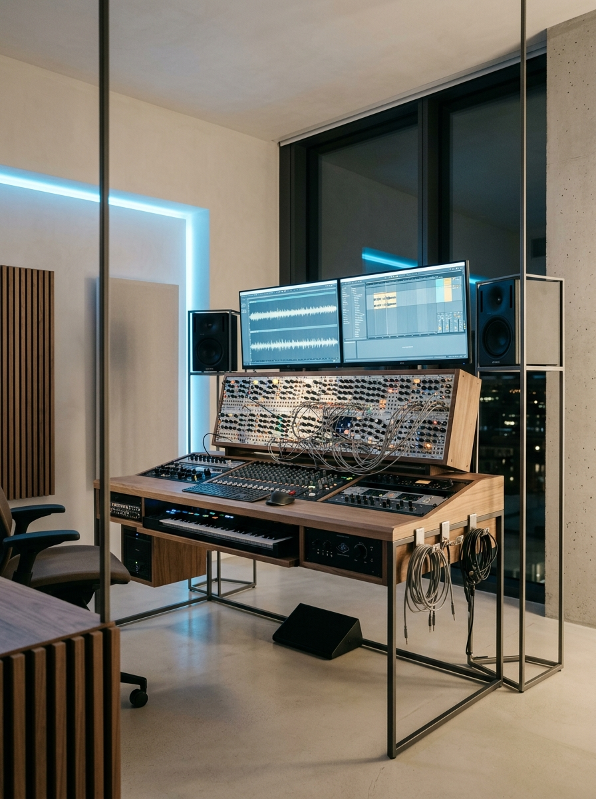
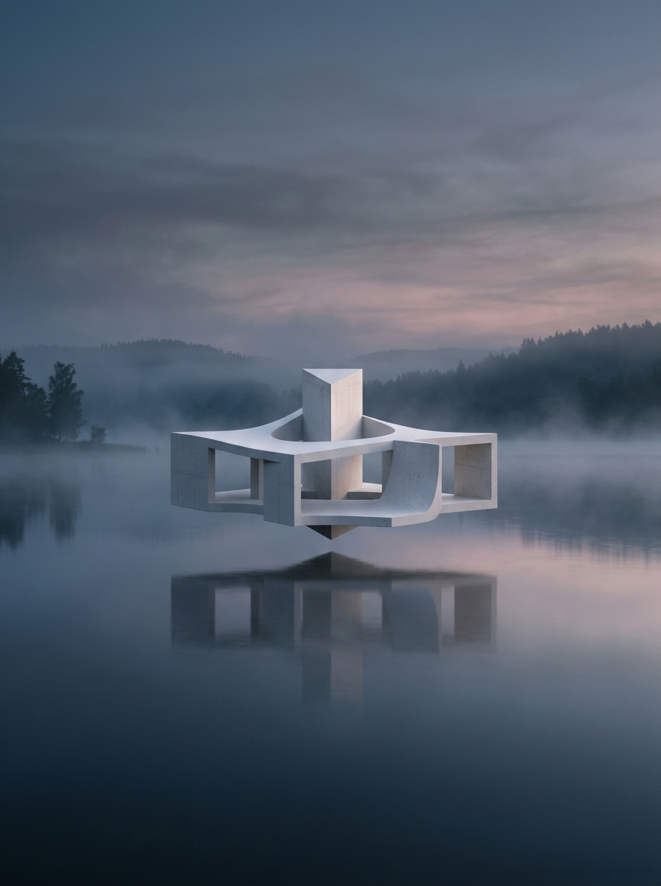

[ ÁUDIO & SOUND DESIGN ]
MÚSICA
Composição de trilhas sonoras originais, sonoplastia imersiva e captação/mixagem profissional para projetos audiovisuais e cinemáticos.

Unindo a pulsação do som, a narrativa do vídeo e a precisão do código para esculpir experiências digitais memoráveis.
Como criador multidisciplinar, transito entre a produção musical e o design digital com uma abordagem focada em minimalismo, luxo e impacto estético. Acredito que um site, uma edição de vídeo ou uma trilha sonora devem respirar e ter estrutura, assim como uma grande obra arquitetônica.
Produção de trilhas originais e sound design customizado que geram conexões emocionais profundas.
Pós-produção de vídeo cinematográfica com foco em ritmo visual e correção de cores primorosa.
Sites codificados com atenção obsessiva aos detalhes, micro-interações e layouts responsivos.
Composição de trilhas sonoras originais, sonoplastia imersiva e captação/mixagem profissional para projetos audiovisuais e cinemáticos.
Montagem rítmica precisa, correção de cor (color grading) avançada, sound design integrado e motion graphics para vídeos institucionais, artísticos e Reels.
| PROJECTS | CATEGORY | LOCATION | YEAR |
|---|---|---|---|
| SURREAL SURFACES | ART DIRECTION & MATTE | MILAN, ITALY | 2026 |
| ROOF ARCHITECTURE STUDIO | WEB DESIGN & CODE | LVIV, UKRAINE | 2026 |
| CINEMATIC MONTAGE 4K | VIDEO EDITING / GRADE | REYKJAVÍK, ICELAND | 2025-2026 |
| MODULAR ATMOSPHERES | MUSIC & SOUND DESIGN | BERLIN, GERMANY | 2025 |
| FINE ART RETOUCHING | PHOTO MANIPULATION | PARIS, FRANCE | 2024-2025 |
| DOCUMENTARY CUTS | VIDEO POST-PRODUCTION | TOKYO, JAPAN | 2024 |

Engenharia de som e composição musical personalizada voltada a branding, cinema e instalações imersivas.
Trilha ambient criada com sintetizador modular analógico Eurorack.
Música minimalista com texturas de concreto, metal e batidas lo-fi.
Trilha sonora híbrida orquestral-eletrônica para curtas-metragens.
Utilização de sintetizadores analógicos, gravação externa de foley e design de som imersivo (Dolby Atmos/Surround). Todo o processo de mixagem e masterização é feito visando o máximo impacto acústico em fones e salas de cinema.
Montagem rítmica precisa e correção de cor cinematográfica que traduzem histórias visuais de forma impactante.
Seleção criteriosa dos takes, sincronia de áudio e criação de cortes dinâmicos focados no engajamento.
Tratamento cromático das cenas usando DaVinci Resolve para criar a atmosfera visual perfeita.
Efeitos de transição invisíveis, motion graphics minimalistas e composição digital.
Edição de curtas-metragens, videoclipes, vídeos institucionais e publicidade vertical (TikTok/Reels). O foco está em reter a atenção do espectador através de um design rítmico perfeitamente casado com o design de som.